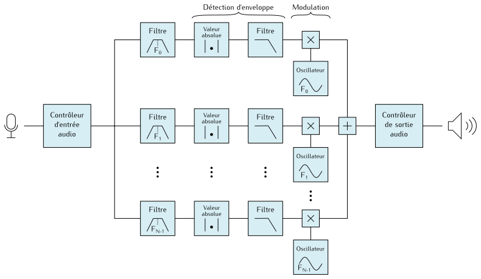
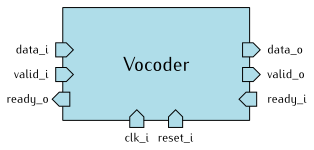
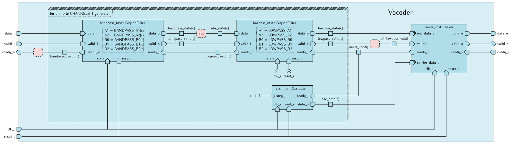
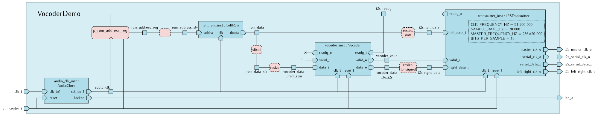

Principe de fonctionnement
Rappelons ci-dessous le schéma de principe du vocodeur que nous
devons développer :

Maintenant que nous avons les principaux blocs de traitement du signal
disponibles sous la forme d’entités (BiquadFilter, Oscillator, Mixer),
le vocodeur lui-même sera développé
en instanciant et en interconnectant ces blocs.
L’entité Vocoder

L’entité Vocoder ne possède pas de paramètre générique.
Elle traite un flux de données en utilisant le protocole ready/valid,
où elle joue à la fois les rôles de consommateur et de producteur :
| Port |
Direction |
Type |
Rôle |
clk_i |
Entrée |
Logique |
Le signal d’horloge global du système |
reset_i |
Entrée |
Logique |
La commande de réinitialisation du système |
valid_i |
Entrée |
Logique |
Indique qu’un nouvel échantillon est disponible en entrée |
ready_o |
Sortie |
Logique |
Indique que ce vocodeur est prêt à recevoir un nouvel échantillon d’entrée |
data_i |
Entrée |
Virgule fixe (vocoder_data_t) |
La valeur d’un échantillon audio à traiter |
valid_o |
Sortie |
Logique |
Indique qu’un nouvel échantillon est disponible en sortie |
ready_i |
Entrée |
Logique |
Indique que le consommateur relié à ce vocodeur est prêt à recevoir un nouvel échantillon |
data_o |
Sortie |
Virgule fixe (vocoder_data_t) |
La valeur d’un échantillon audio traité |
Réalisation du vocodeur
Voici une représentation de l’architecture associée à l’entité Vocoder.

Pour chaque voie, elle instancie un filtre passe-bande, un filtre passe-bas
et un oscillateur.
En VHDL, on utilisera l’instruction for...generate
pour construire le circuit de toutes les voies de façon itérative.
À droite, une instance de l’entité Mixer collecte les données en provenance des filtres
passe-bas et des oscillateurs.
Les interfaces producteur/consommateur sont gérées de la manière suivante :
- Les données d’entrée sont envoyées à tous les filtres passe-bandes.
La sortie
ready_o est mise à '1' lorsque tous les filtres sont prêts.
- Entre les filtres passe-bandes et passe-bas, on considère que le calcul
de valeur absolue n’a pas besoin d’interfaces producteur et consommateur spécifiques.
On insère l’opération
abs sur la ligne de données et on relie telles quelles
les lignes ready et valid.
- En entrée de l’instance de
Mixer, les données sont considérées comme valides
lorsque tous les filtres ont leur sortie valide.
- L’interface producteur de l’entité
Vocoder est gérée directement par l’instance
de Mixer.
Complétez le fichier Vocoder.vhd de manière à respecter ce schéma.
Application de démonstration
L’entité VocoderDemo illustre le fonctionnement du vocodeur sur un extrait
audio stocké en RAM.
L’architecture s’inspire de l’application I2SDemo, dans laquelle nous avons
supprimé la mémoire RightRom et nous avons inséré une instance de Vocoder
entre la sortie de LeftRom et l’entrée correspondant à la voie droite
du transmetteur I2S.

Ainsi, au cours du fonctionnement de ce circuit, vous devriez entendre
l’extrait audio « week-end » original dans l’oreille gauche, et le même
extrait traité par le vocodeur dans l’oreille droite.
Synthétiser et implémenter le circuit
Indiquez que l’entité VocoderDemo est l’entité principale du circuit :
set_property top VocoderDemo [get_filesets sources_1]
Générez le fichier binaire à charger dans le FPGA :
Flow Navigator → Program and Debug → Generate Bitstream.

Vivado va enchaîner toutes les étapes d’analyse des fichiers sources, de synthèse logique, de placement et routage,
pour terminer par la génération d’un fichier binaire à charger dans le FPGA.
À la fin des opérations, la boîte de dialogue Bitstream Generation Completed s’affiche.
Choisissez Open Hardware Manager.
Vérifiez que l’interrupteur d’alimentation de votre carte Basys3 est en position OFF.
Le cavalier situé à côté de l’interrupteur doit être en position USB.
Branchez le module PmodI2S sur le connecteur JA (en haut sur le côté gauche de la carte)
et branchez un casque stéréo ou des enceintes sur le connecteur jack.
Vous ne connaissez pas à l’avance le volume de la sortie audio.
Ne mettez pas vos écouteurs sur les oreilles avant d’être sûr
que le son n’est pas trop fort.
Reliez le connecteur micro-USB de la carte à un port USB de votre PC.
Mettez la carte sous tension.
En haut du panneau Hardware Manager, pressez Open target et choisissez Auto Connect.

Pressez ensuite Program Device.

Implémentation de référence
Pour vous éviter de rester bloqués à cette étape, nous fournissons deux fichiers
de référence :
src/Vocoder/Vocoder-ref.vhd est un fichier source VHDL du transmetteur I2S,
dont le contenu a été volontairement rendu illisible, et dont les valeurs de paramètres
génériques ont été figées.
Nous vous conseillons de ne pas perdre de temps à essayer de le rendre lisible.ref/VocoderDemo-ref.bit est le fichier binaire de l’application de démonstration à
charger directement dans le FPGA à partir du Hardware Manager de Vivado.
Effectuez l’action Program Device et choisissez le fichier VocoderDemo-ref.bit.
{kind=link}
{kind=link}
{kind=link}
{kind=link}